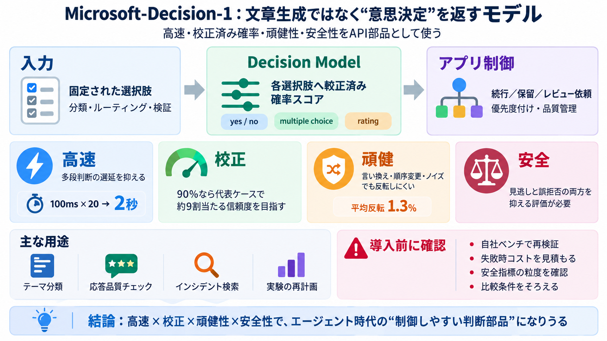

Decision-1 '4.5x faster' rests on a formula; raw timing gives 1.4x | P.K. Sharma
Six interactive charts are embedded in the post as encoded documents. We decoded them and read their data arrays as data…

LLMの“文章生成”とは別に、ルーティング／分類／検証をそのまま実行できる「構造化された意思決定出力」を目指すモデルです。
意思決定モデルは、選択肢や判定基準に対してスコア／評価を返し、アプリ側のルーティングや検証に直結させます（文章生成とは役割が違う）。
Microsoft-Decision-1は、ルーティング、分類、優先度付け、検証、ワークフロー制御などを「即座に使える出力」に変換します。
36ベンチマーク（約15万問、学習除外状態）で最高精度を達成し、後追いモデルより数倍〜数十倍速いと主張されています。
Qwen3.5-9Bをポストトレーニングし、各選択肢に対する較正済み確率スコアをAPIで返す設計です。
目標はランキング精度だけでなく、90%と言った時に代表ケースで約9割当たるような校正を重視する点です。
入力が揺れる現場でも判断が反転しにくいことが検証されています（平均反転1.3%、条件により反転ゼロ）。
危険な要求への不適切加担を避けつつ、有益性を無意味に落とさない方向で評価したと述べられています。
内部利用例として、テーマ分類、応答品質の品質管理、インシデント対応の知識検索、科学実験の再計画の一貫性向上などが挙げられます。
最高精度・高速・校正の主張は魅力的ですが、失敗の種類や誤作動コスト、ベンチマークの現実妥当性は追加情報が不足しています。
Microsoft-Decision-1は「高速・信頼度付き・安定した意思決定」をAPI部品として組み込む方向性で、エージェント時代の運用に適合しうるモデルです。
Six interactive charts are embedded in the post as encoded documents. We decoded them and read their data arrays as data…
Microsoft-Decision-1 achieved the highest accuracy in our 36-benchmark comparison, spanning nearly 150,000 questions acr…
The evaluations of judges and of call screening both located the value of a decision model in how its confidence separat…
Advertisement To tackle this, Microsoft engineers post-trained a 9-billion-parameter base model (Qwen3.5-9B). In benchm…
### Cost API spend is the decision calls plus the text helper, for all 50 attempts per model. OpenRouter reported the f…